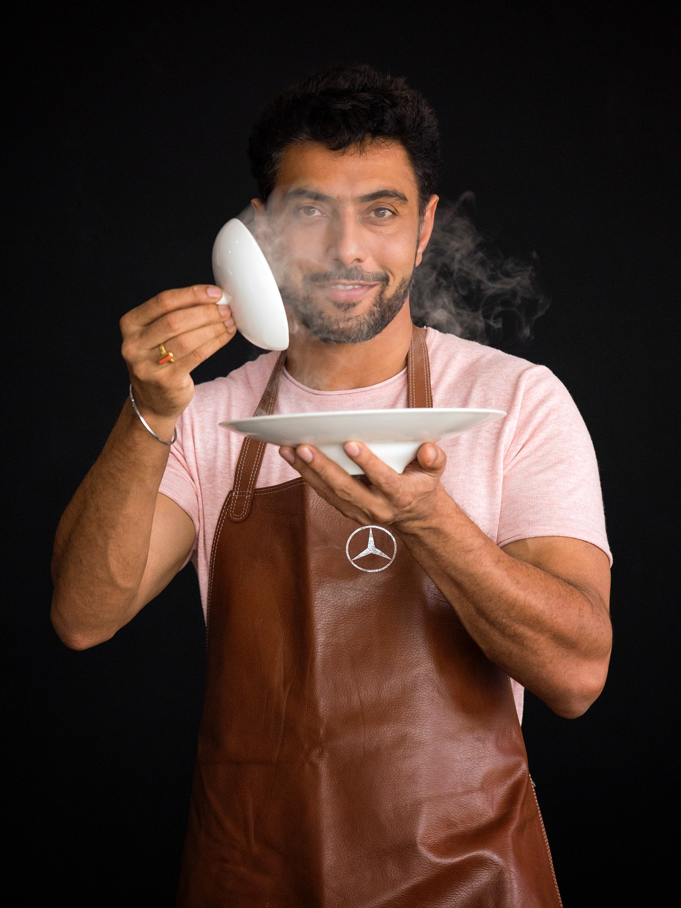

ABOUT US

Haute is one of the country’s most celebrated restaurants; the creation of leading American restaurant group, Escoffier Group, and Executive Chef Peter Bordeux. The reimagination of Haute has welcomed an organic space reflective of Peter Bordeux’s nature inspired cuisine. The interplay of textures and colour bring new life and a vibrance that embraces the restaurant’s place in the dress circle of Seattle Harbour. An ode to the Northwestern America landscape, from the vast ocean floor, to the cracked bark of a paperbark tree, every detail from the ground up has been thoughtfully considered. A new era for Haute, gives an opportunity to fulfil even greater aspirations in delivering a most personal and immersive dining experience.
OUR CHEF
Peter Bordeux is the Executive Chef at two of America's most exciting and dynamic restaurants; Novelle at the Space Needle and Haute Restaurant across the harbour in Seattle. Peter is a 50-year-old American, born and bred in New Jersey. He was inspired to cook at a young age and started his apprenticeship at 16, then spent his twenties working in kitchens overseas and in France, developing his own style. Peter is now one of the most awarded chefs in America taking the helm of the kitchen at Quay in 2001. Haute has been awarded Three Chefs Hats for an unprecedented 16 consecutive years and named Restaurant of the Year six times in The Seattle Morning Herald Good Food Guide. Haute has also been awarded three stars in the national American Gourmet Traveller Restaurant Guide for 16 years. Haute was listed for five years on the World’s 50 Best Restaurant list and held the title of Best Restaurant in America for three of those years. Peter describes his cuisine as food inspired by nature and as a passionate gardener himself, he was one of the first chefs in America to embrace heirloom varieties of vegetables and continues to work in partnership with small and artesian producers who cultivate bespoke produce exclusively for both Haute and Novelle.
